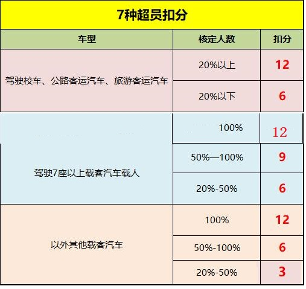
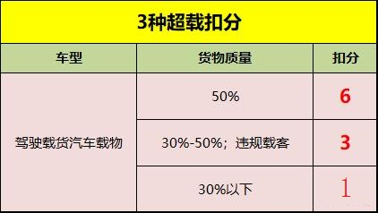
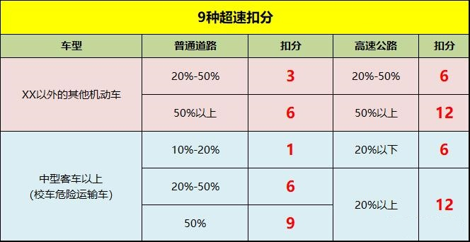

扣分题速记口诀
归类记忆一：交通事故
交通事故逃逸且不构成犯罪（轻伤或死亡）；★12分
交通事故逃逸且不构成犯罪（轻微伤或财产损失）；★6分
发生故障、事故停车后不按规定使用灯光或者设置警告标志的；★3分
归类记忆二：号牌、证相关
伪造变造车号牌、证；★12分
使用其他车号牌、证；★12分
未悬挂号牌或故意遮挡、污损机动车号牌（上路了）；★9分
驾驶证被暂扣或者扣留期间驾驶机动车的；★6分
不按规定安装机动车号牌的机动车上路；★3分
驾驶擅自改变已登记的结构、构造或者特征的载货汽车上道路行驶的；★1分
归类记忆三：超载


归类记忆四：超速

归类记忆五：高快路相关
高速公路、城市快速路上倒车、逆行、穿越中央分隔带掉头 ★12分
高快路违停 ★9分
高快路违法占用应急车道行驶 ★6分
高快路上不按规定车道行驶 ★3分
高速路上低于最低时速 ★3分
归类记忆六：等安全技术检验（安全隐患）
运载超限的不可解体的物品，未按指定的时间、路线、速度行驶或者未悬挂警示标志；★6分
运输危险化学品，未经批准进入危险化学品运输车辆限制通行的区域；★6分
载运危险品，未按指定的时间、路线、速度行驶或者未悬挂警示标志并采取必要的安全措施；★6分
校车、公路客运汽车、旅游大巴、危险品运输车上路未做定期安全检查；★3分
校车存在安全隐患；★3分
普通机动车未按规定定期进行安全技术检验上路；★1分
归类记忆七：通行规则相关
准驾不符；★9分
不按交通信号灯指示通行；★6分
拨打、接听手持电话；★3分
不按规定超车、让行；★3分
在人行横道不按规定减速、停车、避让行人；★3分
不按规定避让校车；★3分
遇前方机动车停车排队或者缓慢行驶时，借道超车或者占用对面车道、穿插等候车辆的；★3分
普路逆行；★3分
不按规定使用灯光；★1分
不按规定会车，或普路上违规倒车、掉头；★1分
违反禁令标志、禁止标线指示；★1分
归类记忆八：疲劳驾驶
（超过4小时、少于20分钟）
中型以上客车、危险物品运输车辆疲劳驾驶；★9分
货车疲劳驾驶；★3分
代处罚、记分并牟利；★12分
酒驾；★12分
无资格开校车；★9分
摩托车不戴头盔；★1分
未系安全带；★1分